Visiting Rothko
This week I went to my first Rothko exhibition. I was surprised by two things: the beauty of his paintings from the 40s and how large “Classic” Rotkhos are.
It was also interesting to know that he started painting by chance at twenty five. He didn't follow a structured path and learned from direct experiences in the artistically rich and vibrant New York of the 20s.
His work is often presented in eras, starting from the first paintings depicting the city of New York and scenes from everyday life. In this period he’s influenced by the Impressionists, with the exception of the only self portrait known to the public, that draws explicit inspiration from Rembrandt’s work.
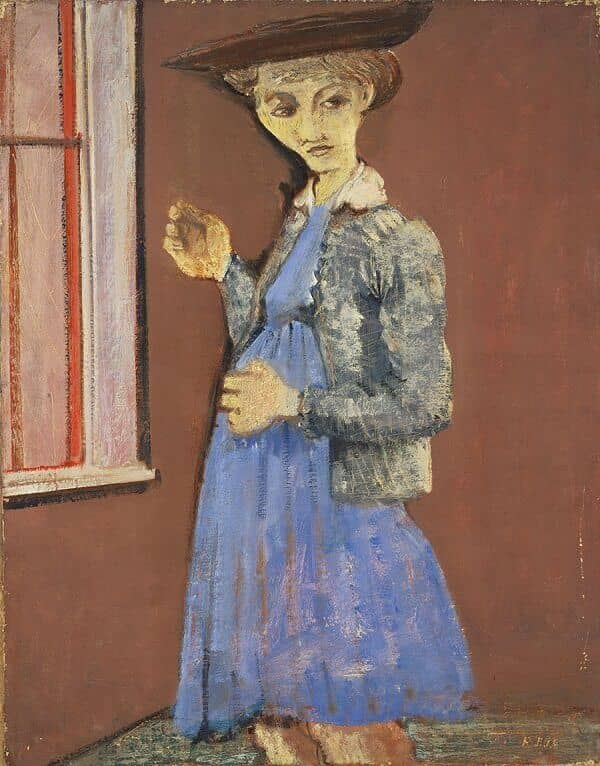
Starting from the mid thirties, Rotkho dedicated himself to research instead of painting, he was immersed in philosophy and mythology and his style started to shift from real forms to a surreal representation of the world. Mythology and surrealism were an attempt of expression in an environment where the tensions that would later lead to WWII were building up.
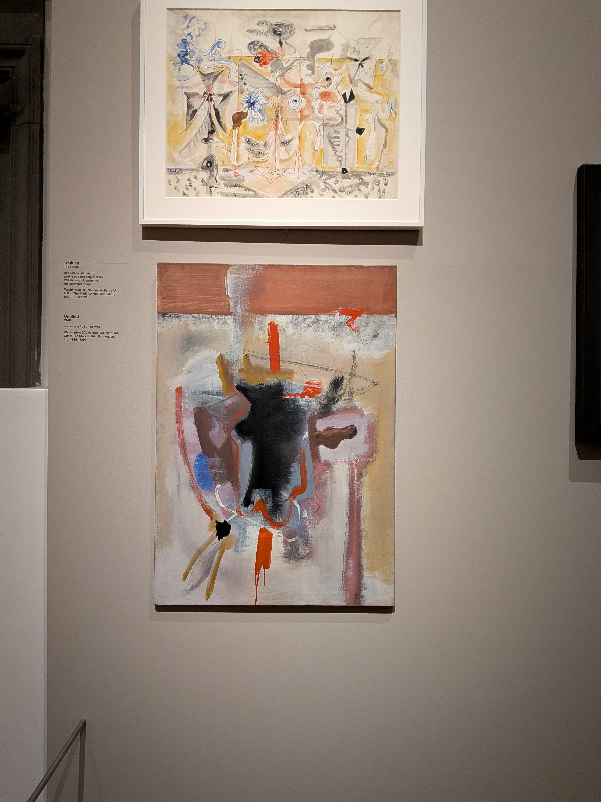
In 1946 Rothko made a transition from his neo-surrealist style to what will become known as Multiforms, these paintings touched me deeply and felt like a breath of fresh spring air. They have a dynamic element that will be later crystallized in his later Classics. The color patches are overlaid in harmony and the result is a vibrant experience of symbiosis. The forms will slowly become more structured and the boundaries more defined. During my visit I was listening to Selected Ambient Works 85-92 and Pulsewidth happened to be playing, I could literally feel the painting pulsing.
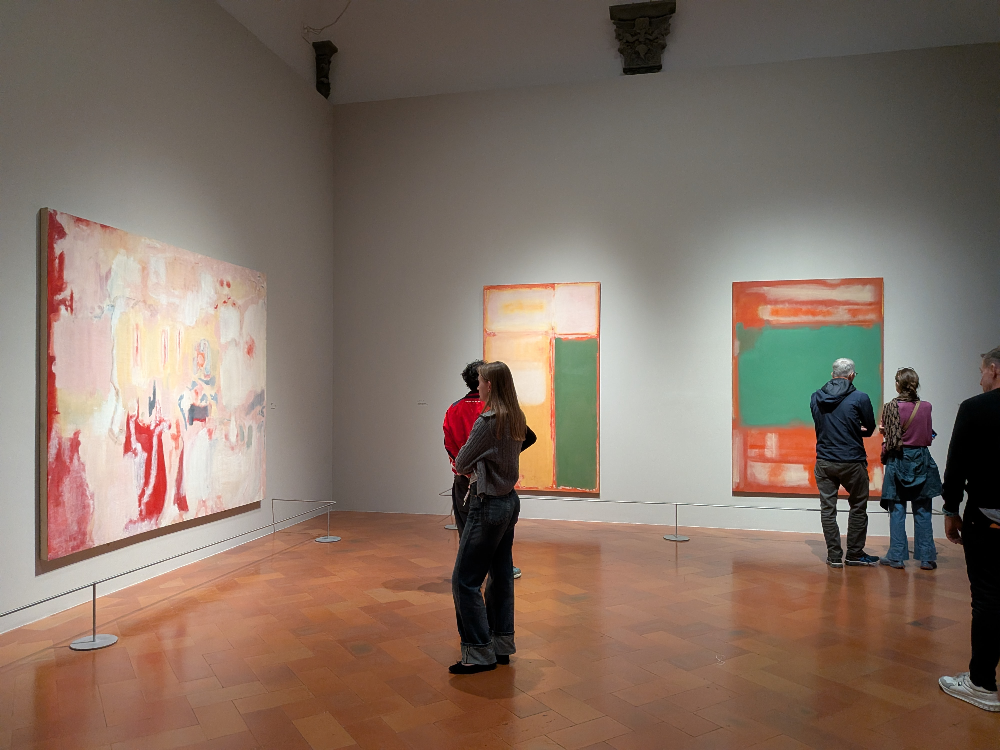
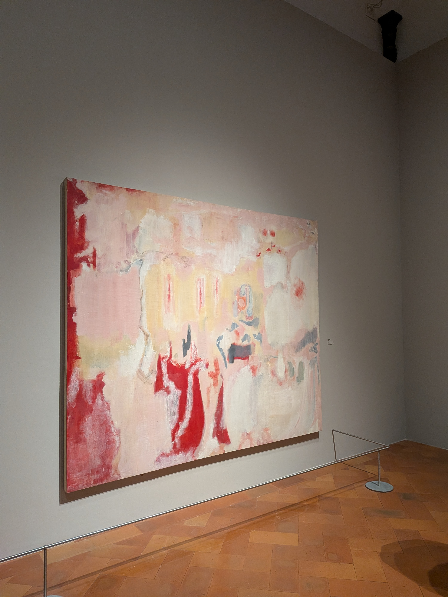
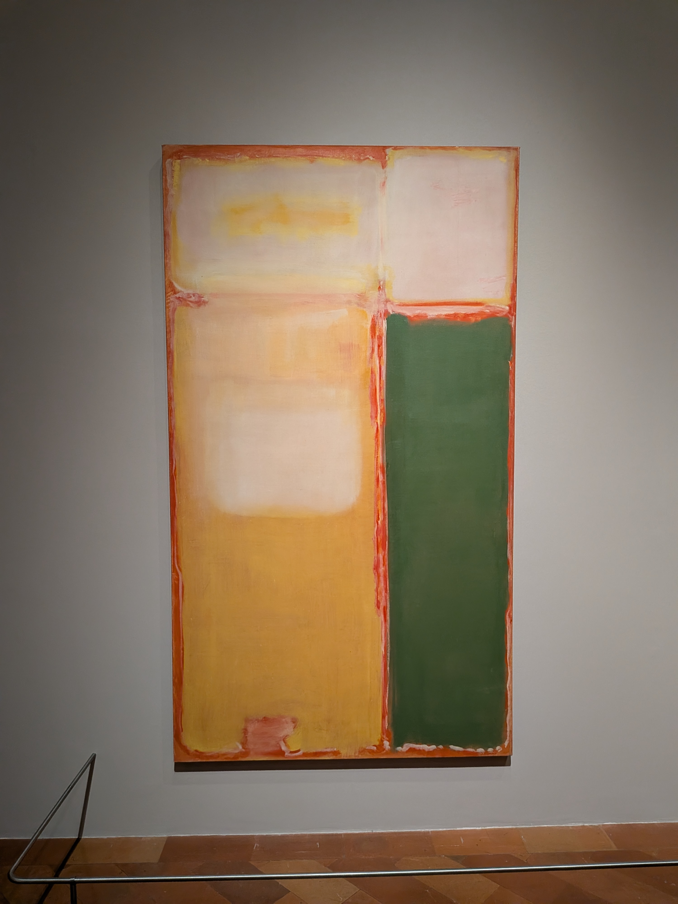
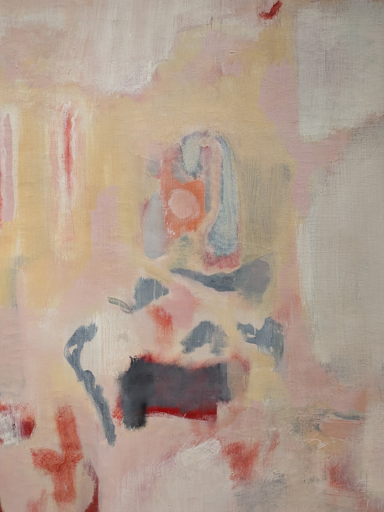
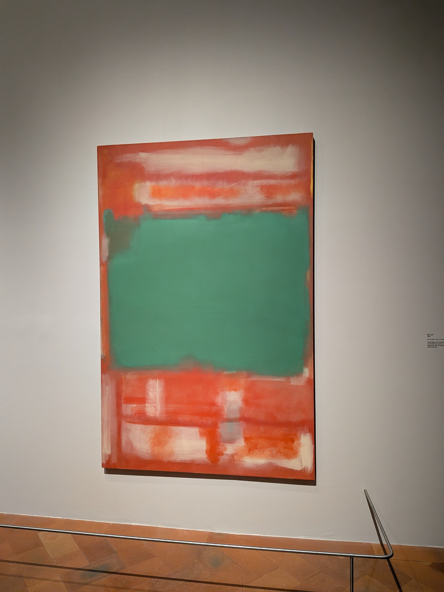
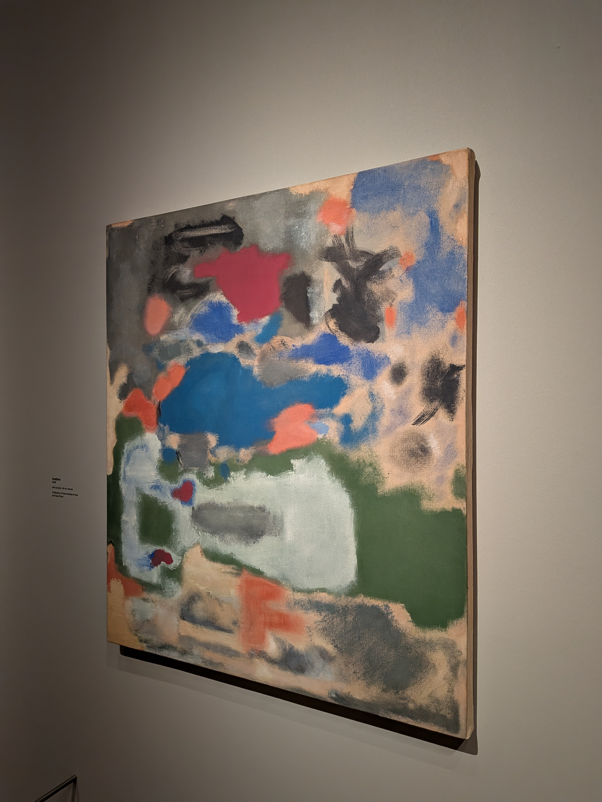
The third room hosts some of the Classics. These are the paintings that drew me to Rothko some years ago. I was surprised by how large the paintings are. I later discovered that in this period the artist stated that his work is not a depiction of an experience, it is an experience itself, so he committed to these wide pieces that he recommended to be hanged just tens of centimeters above the ground, in order to allow the viewers to immerse themselves in the experience. As anticipated in the late Multiforms, the color forms are simplified, structured and the communication between them is more direct. A hypothesis that explains this maturity in style points to Europe, where a sense of balance and scale left a lasting impression on the artist and his work. In a short documentary at the end of the exhibition, Rothko shares that after visiting Italy he became aware of the fact that he was always painting temples without realizing it.
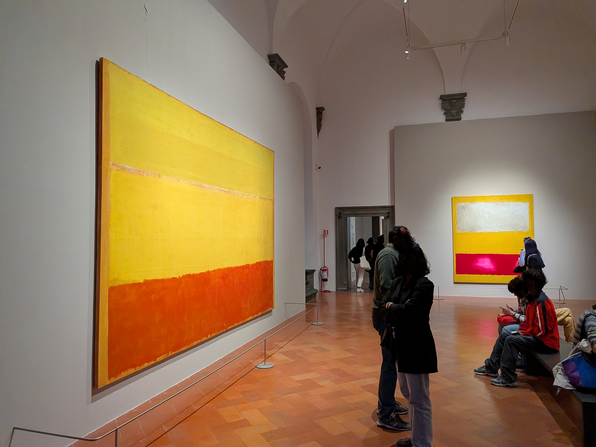
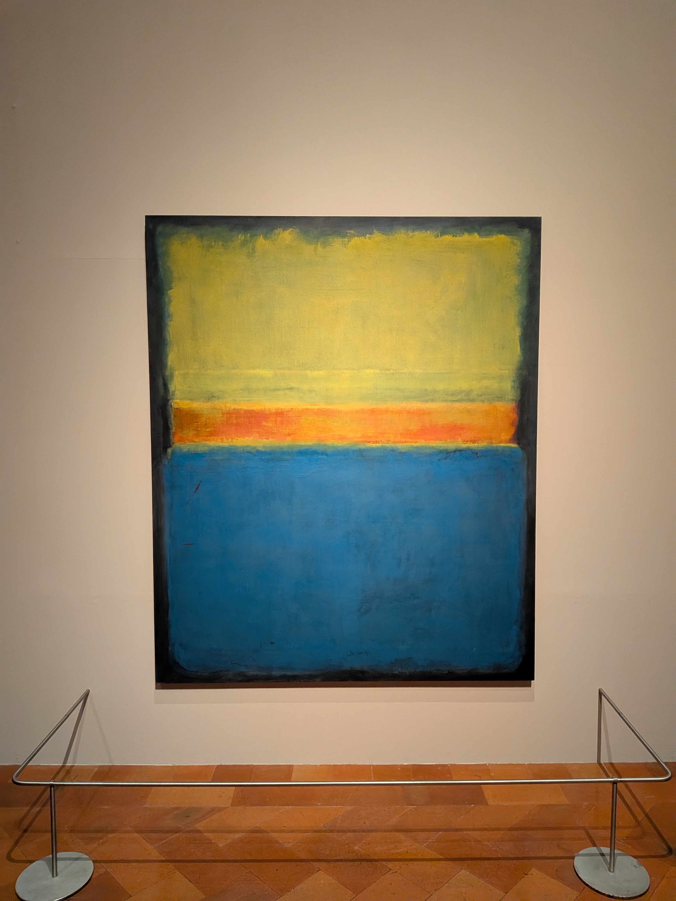
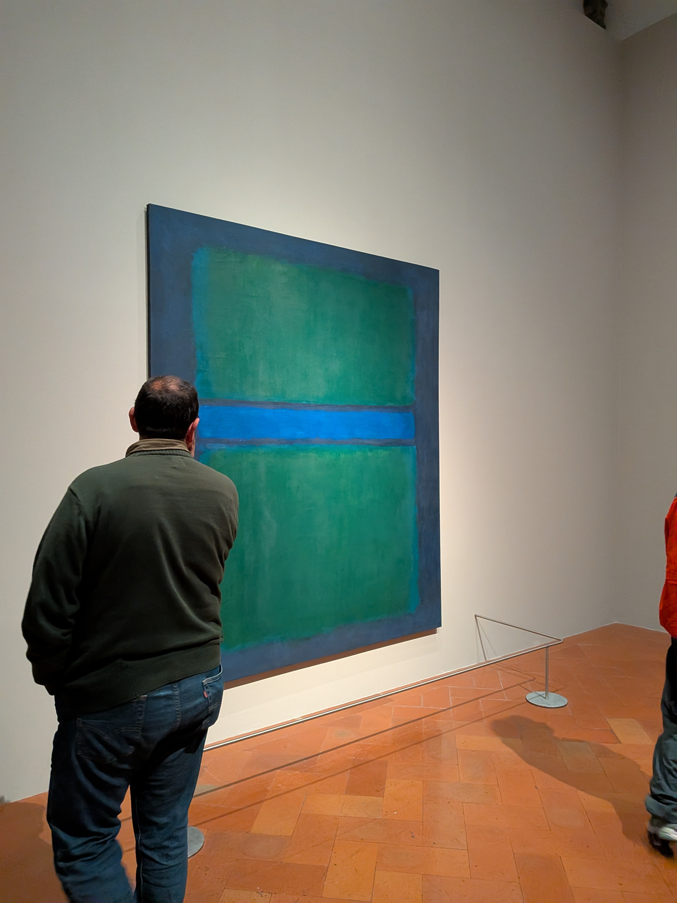
The paintings of this period consist of two or three rectangles floating in a field of color, the rectangles are never a barrier, allowing the colors beneath to flow toward the viewer. The artist transitions from luminous reds and yellows to greens and deep blues. His reading of Kierkegaard and Freud guided his exploration of the psychological dimension of color and the transition towards colder tones. The introspection continues, leading him to darker hues, mainly browns, and culminates in the fourteen hues of black hanging on the walls of the Rothko Chapel in Houston, Texas.
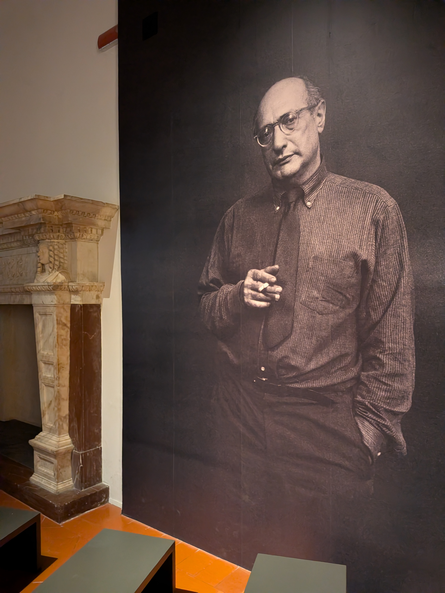
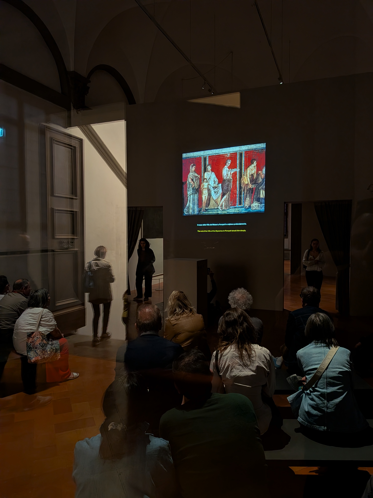